FIELD NOTE 01
Fresh clothes, wild miles, red flowers: a three-city pilgrimage
I was a second-year grad student drifting along the edge of research, and I had not planned any more races for the second half of 2017. But sitting still for too long made the restless part of me start acting up again. Every now and then a 21K or 42K would tug at me and remind me that life gets too flat if it never gets shaken awake. So I wavered, then I wandered again. I went to three cities—Guang’an, Yichang, and Changsha—for three people, turning the trip into a red-flowered pilgrimage.
FIELD NOTE 02
Guang’an — Deng Xiaoping
To be honest, before this I barely knew where Guang’an was. I only knew it was the hometown of Brother Long from Wuhan University—the “god of the ball,” the “number-one point guard,” and the guardian angel of civil-engineering basketball. On my Changzhi trip earlier that year, I also met Sister Mengru, an outdoorsy powerhouse who had studied in Portugal for years. She strongly recommended Guang’an, Deng Xiaoping’s hometown, and told me volunteers in revolutionary uniforms would salute runners along the course. That was my first image of the city.
Then October arrived. I was stuck in the lab wrestling with my thesis plan and structure, irritated and anxious. During a break I opened the Chinese marathon calendar and saw that Guang’an Marathon registration was still open. Everyone else seemed to be traveling during the National Day holiday anyway, so I put the mess of my thesis aside and caught the last train for the October 14 race. If I was going to run, then of course it had to be a marathon. Just like that, riding the spring breeze of reform and opening-up, I laced up my shoes and went to see Grandpa Deng.
The plan was simple: leave on Friday night and return to Wuhan on Monday morning. No matter what, I could not let marathon travel eat too much into normal work time. That was the principle and the bottom line. So the whole trip was rushed from the start.
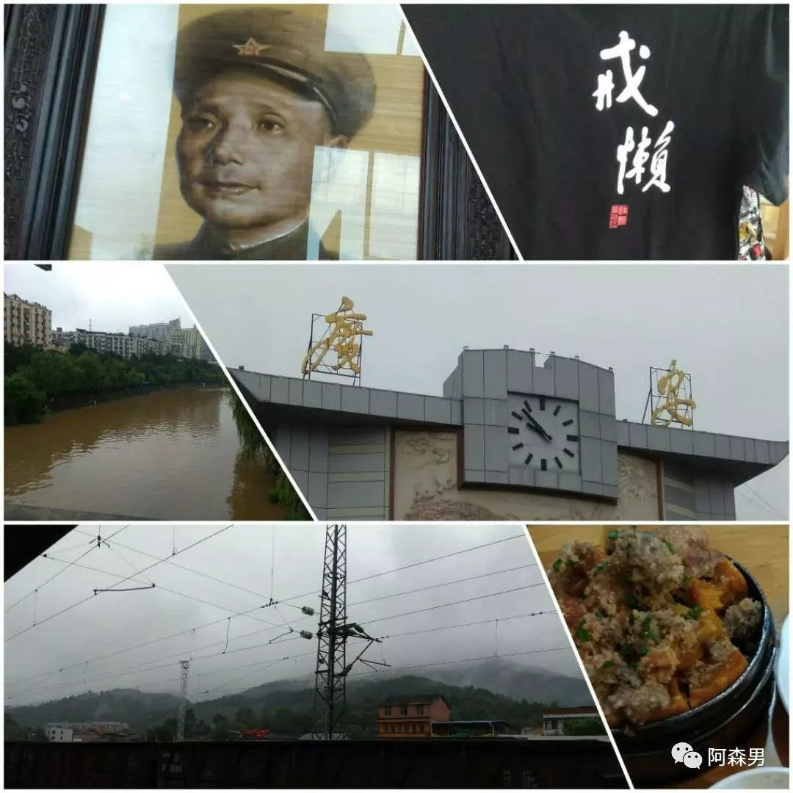
After fourteen hours overnight in a hard seat, I arrived in Guang’an, Sichuan. The sky was gray and misty, with ridgelines curling into the distance. I remembered a line from feng shui about slow-arriving mountains, immortal energy above, martial energy below, yang in front and yin behind—the kind of place people call a dragon’s lair. I thought: no wonder Grandpa Deng, whom I admire so much, came from here.
Back to the race. As soon as I stepped off the train, I saw two uncles in running shoes walking out of the station together. They had to be here for the marathon too. Following the universal rule that runners are family, I went over and said hello. After a few words, I realized everyone had come for Grandpa Deng. After a quick rest at the hostel, we went to pick up our race packets. The volunteers were thoughtful and gave each runner an anti-bib-swapping wristband. Guang’an Marathon had two kinds of medals: one pre-race medal with black-cat and white-cat imagery, full of Deng-style humor. At the souvenir booth, I bought a shirt printed with “Quit Lazy” and Deng quotations. Those two words got me immediately. That evening I asked Brother Long what was good to eat in Guang’an, found a roadside place, and ate eight bowls of the local specialty pork. Marathon and good food—neither could be betrayed.
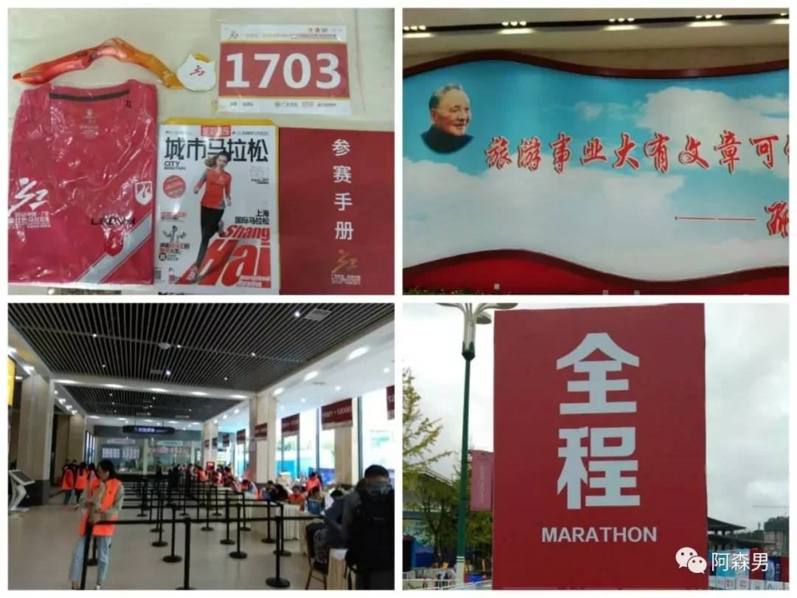
I slept beautifully that night. Since I had not raced in a while, I figured 4:30 would be enough and had no real time goal. After all, the point of this trip was to pay tribute to Grandpa Deng, and the “red marathon” was meant to honor revolutionary martyrs. I even found myself a perfect excuse not to run too fast: you came here for red education, so why hurry through it? Before the race I told Sister Mengru my Guang’an goal was 4:30. She replied, “I hope you can run 4:00.” I laughed out loud. Come on, don’t tease me.
The starting gun went off. The weather was perfect—overcast, neither hot nor cold—and I felt comfortable from the first steps. Without noticing it, I followed the four-hour pacer for about ten kilometers. The group gradually split into waves, and I settled in with Brother Yong, Sister Yaqiong, and Sister Xuemei. Brother Yong was very professional, coaching us on stride, arm swing, energy-saving rhythm, and how to run each segment. I learned a lot. After halfway, several kilometers of long climbing made everyone suffer; a long downhill followed, then another climb, like a roller coaster. Sister Yaqiong dropped back, while Brother Yong and Sister Xuemei moved up into the lead pack. Around 30K I could no longer see them ahead or Sister Yaqiong behind. In the second half of a marathon, you still have to rely on yourself. I chewed an energy gel and yelled, “Come on, give it everything!” At 30K there was a big turnaround—uphill first, then downhill—and it was brutal. I checked my pace and realized a sub-four might still be possible. Ten kilometers left: just hold around 5:40 per kilometer and count them down one by one. Right when I thought breaking four was safe, my breathing suddenly locked up at 35K. It felt life-threatening. I slowed down, refused to stop, held it together for two kilometers, and then found the 5:30 rhythm again. I got through the wall and came back to life. The last three kilometers felt surprisingly easy, and I finished in 3:57, exactly as Sister Mengru had predicted. At the finish I saw Brother Yong and Sister Xuemei, added them as friends, and felt genuinely happy. We had fought side by side, and that counts for something.
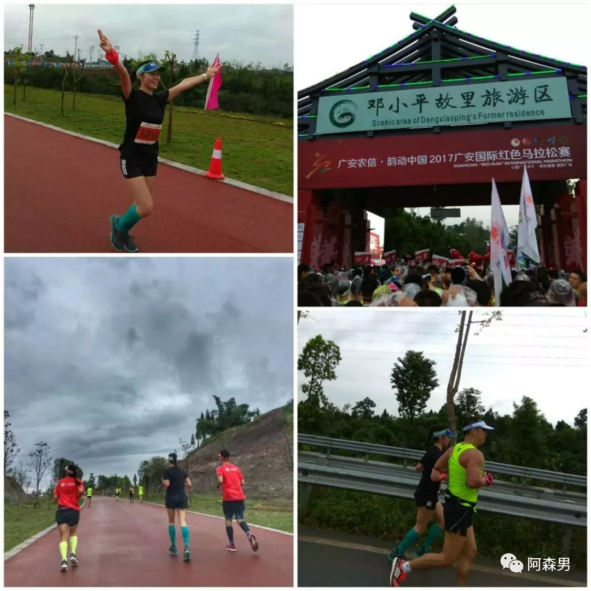
After stretching, I hopped on a motorcycle back to the hostel, showered in a hurry, and ran for the train. Along the way I asked for directions to the bus station in my Northeast accent, while local residents enthusiastically replied in pure Sichuan dialect. With navigation’s help, I finally found the bus to Guang’an Railway Station. The 2:30 train was delayed, but somehow everything still landed just right. At the station I ran into Uncle Youqiang, the strong runner I had met when I first arrived. We added each other and looked forward to meeting again. Then I transferred from Guang’an to Chongqing, took a bus out of Chongqing, and somehow returned to Wuhan through Guang’an again—thinking the whole way, what kind of ticket did I even buy? I reached Wuhan at seven on Monday morning, packed up, and went straight to the lab. Quietly out, quietly back. I wanted to keep a low profile, but one detective found the ticket at noon, followed the clues, and exposed that I had gone out for a weekend marathon. Just like that, I became the negative example of “sneaking out to play.” Still, although I did not stay long in Guang’an, it felt wonderful, and it was completely worth it.
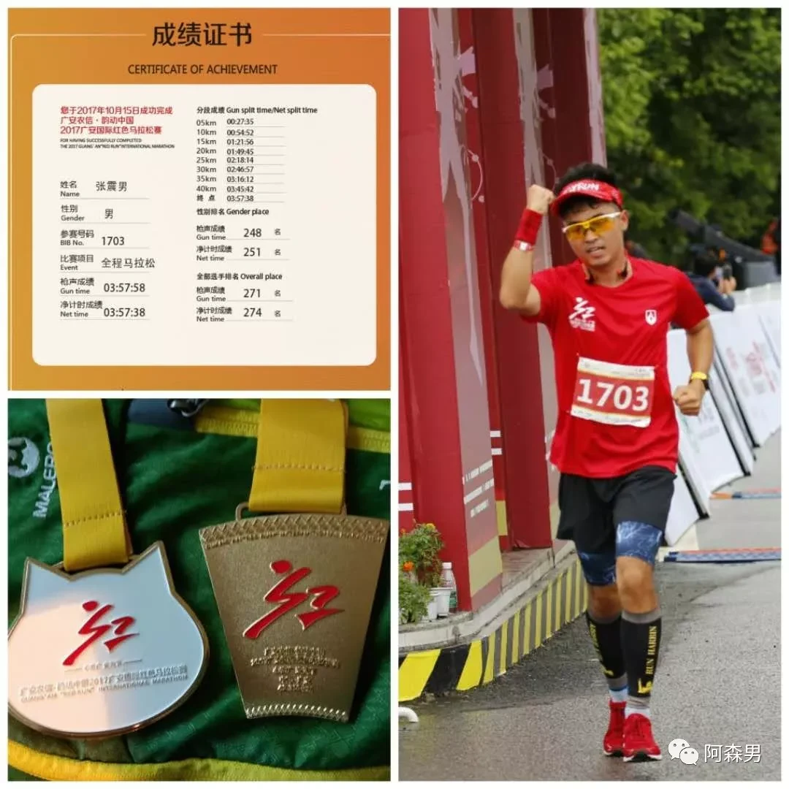
FIELD NOTE 03
Yichang — my advisor
I signed up for the Yichang half marathon because I had promised to take a friend through his first race, and because Yichang is my graduate advisor’s hometown. If Deng Xiaoping helped shape China’s fate, my advisor may have shaped part of mine. A person’s path and a country’s path are never entirely separate, so I also counted this trip as a pilgrimage.
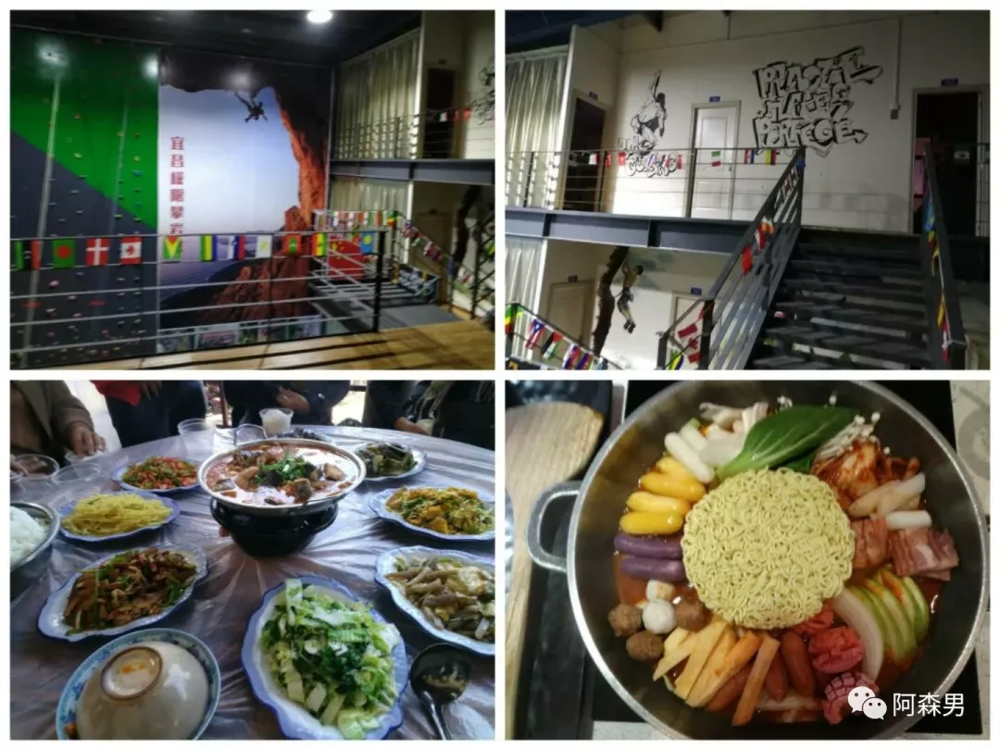
We arrived in Yichang on Saturday afternoon, November 4. It really is a livable city. At many crossings there were no traffic lights, yet cars actively yielded to pedestrians. It felt unusually warm. The last place where I had heard of traffic being that gentle was Hangzhou. We stayed at a hostel with a climbing gym on the first floor and rooms upstairs, and the atmosphere was great. After settling in, we picked up our packets—again, red race shirts—and rode shared bikes around town to look for food. Maybe because Yichang sits near the Three Gorges, the city’s hills were no joke. Luckily it was only a half marathon, so pacing a friend would not be too stressful.
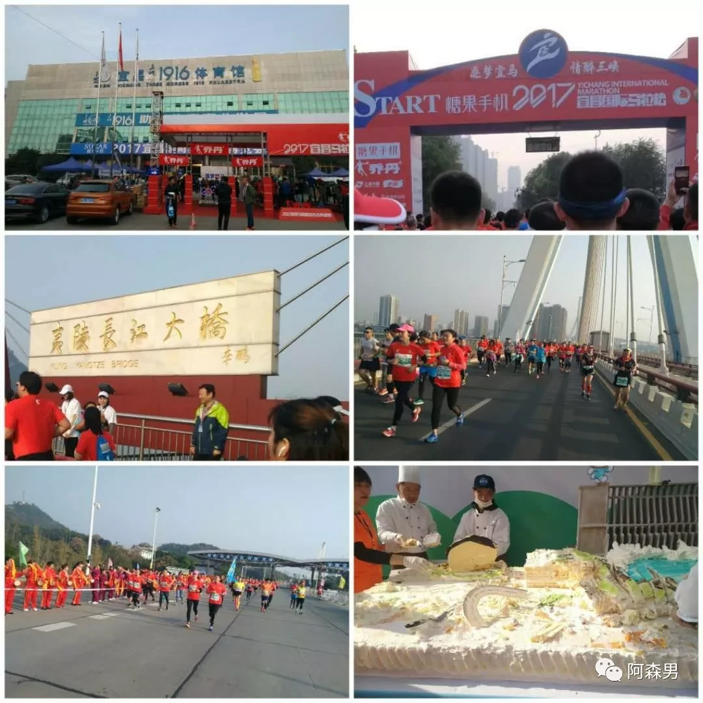
The next morning we reached the start very early. The wind was howling, and because it was still dark, we ducked back into a nearby hotel and waited for half an hour. Before the start, we followed the crowd back out to the line. Beside the Yangtze River, with wind, sunlight, and a packed field of runners, it felt like a good day to run. Since it was my friend’s first race, we kept the pace gentle and the whole thing went smoothly. A few bridges were annoying, but otherwise everything was fine. What moved me most was seeing parents and children at the back of the course cleaning up trash left by runners. The city was warm, and the people were warmer. We finished the half in under two and a half hours, under beautiful noon sunshine. On November 5, beside the Three Gorges, that half marathon was recorded.
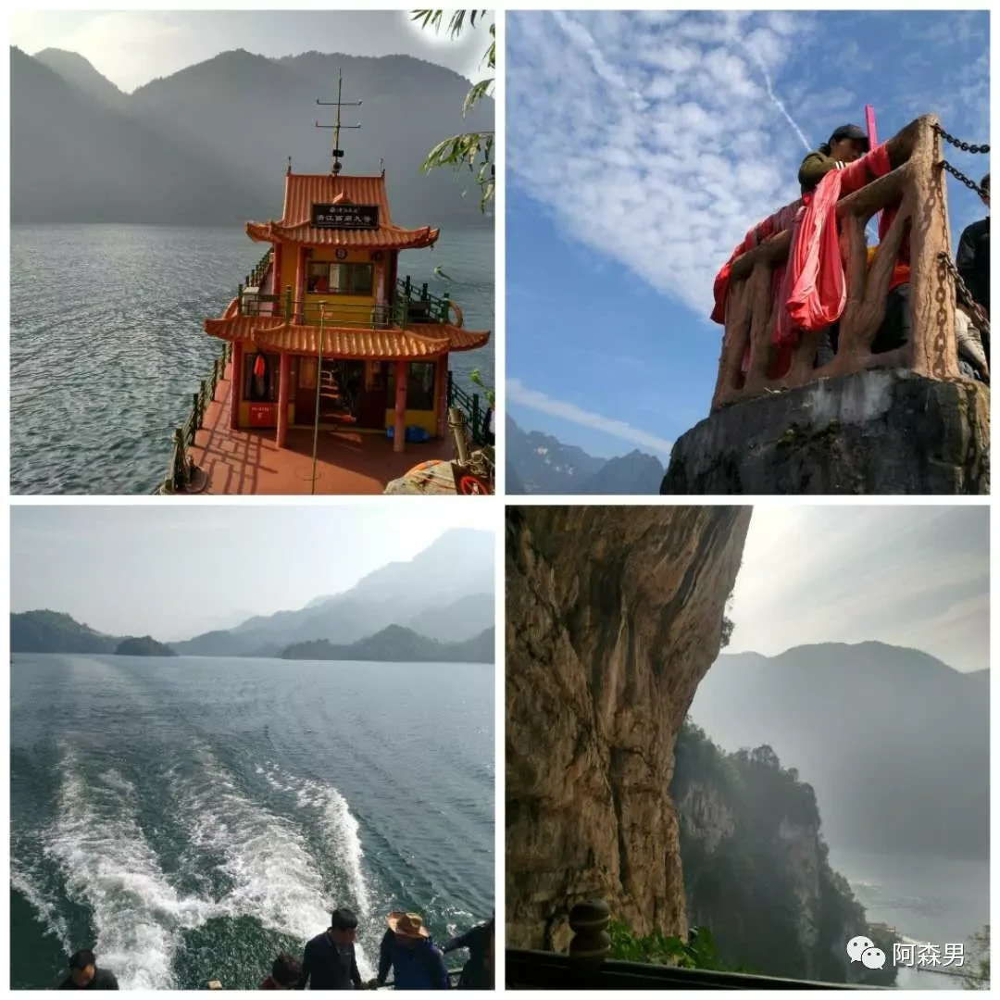
The next day we visited Qingjiang Gallery. It was gorgeous: green mountains, clear water, painted boats, and tourists drifting through the scenery. That evening I returned to Wuhan University and became a campus person again. In the end, the meaning of Yichang was larger than the race itself. The city produces remarkable people—no wonder it gave us such a good advisor. Shh, please allow me this small bit of flattery.
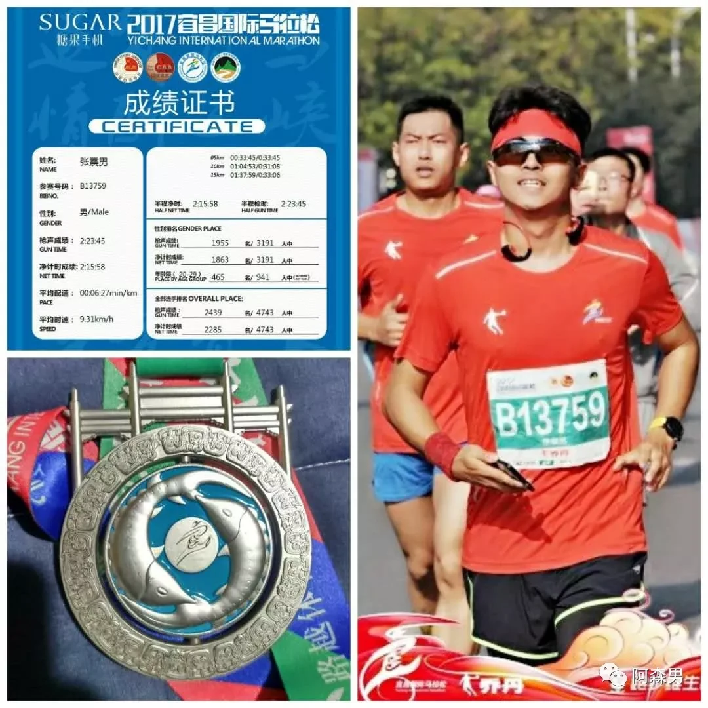
FIELD NOTE 04
Changsha — Chairman Mao
If I had to use one word for my Changsha trip, it would be awkward-comedy mode. Two words: very messy. Three words: extremely messy. The whole thing felt like a live-action “Lost on Journey.” But I still have to say this: no matter how many things went wrong, being able to pay respects to Chairman Mao at the tip of Orange Isle made the trip worth it.
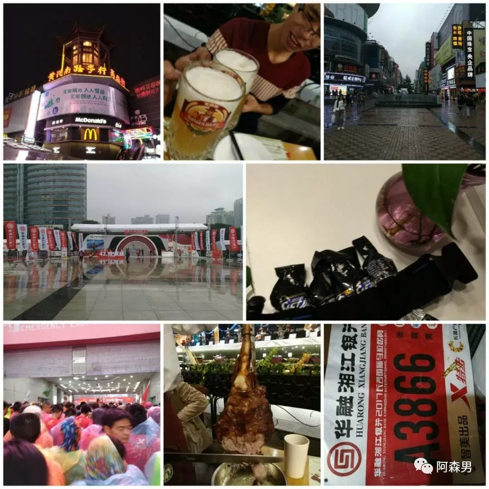
Changsha Marathon was originally scheduled for October, but because of force majeure it was postponed to Saturday, November 18, which collided with the Houguanhu Half Marathon on November 19. I had no choice but to give up Houguanhu. Changsha’s chaos began before I even arrived: I missed the train there and had to change my ticket. On the way back, I rode the subway in the wrong direction and missed another train, so I changed tickets again. I had not prepared for heavy rain and wind, so I had to buy a pair of shoes. I lost my wallet at packet pickup and searched everywhere for it. During the full marathon my waist pouch broke, so I had to hold my phone in my hand. My shoelaces came untied several times and broke my rhythm. My phone died automatically, so the app data was not saved, and my plan to complete the marathon both online and offline had to be abandoned. All those little disasters together became my first impression of Changsha Marathon.
Precisely because things went sideways, the warm parts became easier to remember. At the hostel, our little group of six clicked immediately; people on the same wavelength warm each other up quickly. I also saw my undergraduate roommate Da Song, a top student at Hunan University, who came to the train station on an electric scooter in the wind and rain to pick me up. That evening he insisted on treating me to Hans, which was ridiculously warm. And then there was Changsha giving runners free subway rides. The city had its ways of making up for the mess.
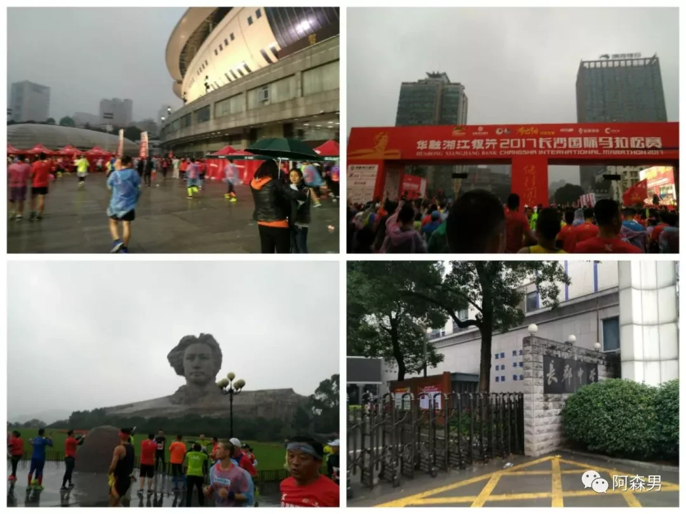
Back to the marathon. After packet pickup, our hostel group took the free subway before dawn straight to Helong Stadium, the race start. I heard it was the coldest day Changsha had seen in months. The morning instantly transported me back to Northeast China. Once we started, my body warmed up a little. It was another full marathon, but with conditions like that I had no performance expectations—just finish safely. Wind and rain followed us the entire way. The first aid station seemed to be around 10K, which felt a bit far. Before 20K we reached Orange Isle, where the huge statue of Chairman Mao stood right beside the runners. Everyone stopped for photos with the Chairman. I wanted to join the fun too, but the moment I pulled out my phone my pouch broke, so I had no choice but to keep moving. Maybe it was too cold; I kept needing bathroom stops and lost rhythm again and again. Around the 30K bridge, with wind and rain hitting me head-on, I thought about quitting for the first time. I’m glad I kept going. After crossing the bridge, the course returned to Orange Isle, even windier and wetter, now directly into a headwind. But the finish was getting close, so I gritted my teeth. The last two kilometers were uphill, and my shoelaces came undone again. That was how I ran back to the finish: messy, cold, and stubborn, into a shivering crowd. Official time: 4:03. Good enough.
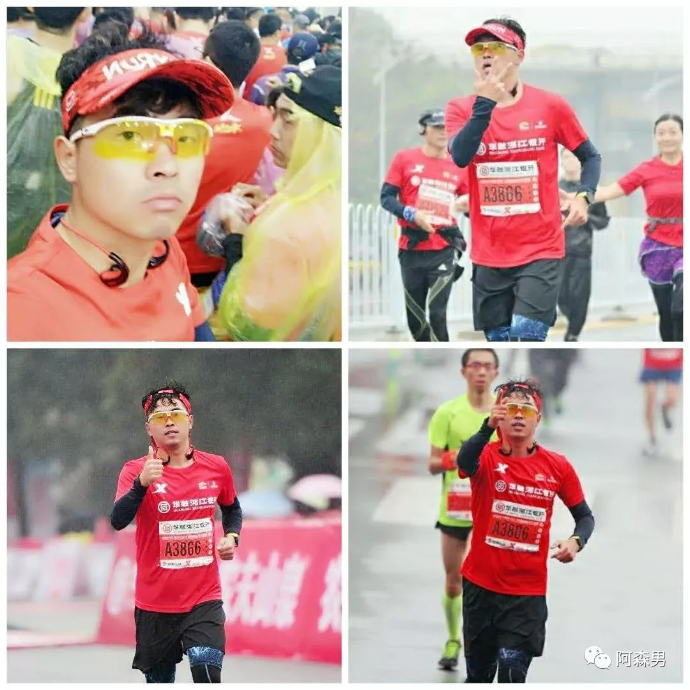
On the way back to the hostel, I passed Changjun High School and took a photo. I heard it was Brother Shuo’s alma mater and the best high school in Changsha, so as a proud underachiever I was happy to borrow a little top-student glow. We cleaned up at the hostel and said goodbye to the group. Sadly, the six of us never got a complete group photo. I took the afternoon bus back to Wuhan—no need to repeat the rest of the travel chaos—then went to dinner with the sports department that evening and attended a group meeting on Sunday. Changsha was the worst marathon experience I had ever had, but a group of people running together can warm up a city. The Biography of Mao Zedong was the first biography of a great person I read from beginning to end. I had long wanted to visit Shaoshan, Chairman Mao’s hometown, and now it felt right to remember him through a run. Changsha was chaotic, but the joy was real.
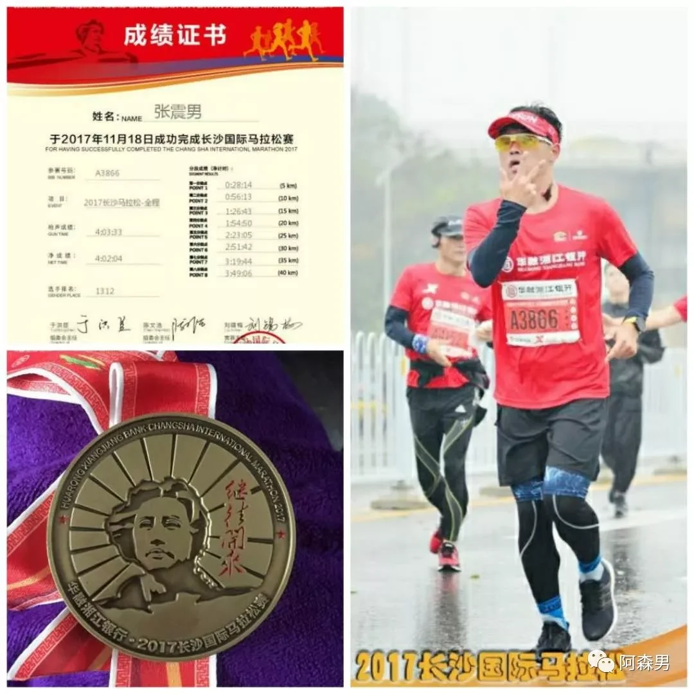
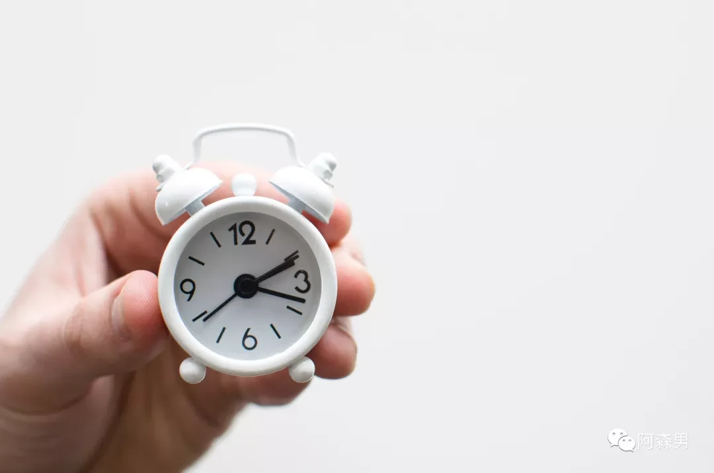
The long stretch of races was over, and it was time for winter break. Students should study, workers should work, papers should be written, experiments should be done. Everything went back to normal: plain, but not boring. I still wanted to see distant scenery, and I still needed to finish the list in front of me. It was busy, but it felt full. Maybe you wonder why people are so drawn to marathons. I thought about it for a moment and decided that a marathon is like a gas station. It jolts the tense nerves every now and then, giving us more passion to face complexity and challenge ourselves. At least I do not want to become a greasy middle-aged man too quickly, and I cannot yet achieve that so-called Buddhist calm. I saw a line Steve posted on WeChat: “Still young, still hopeful, okay.” Life needs the occasional fresh clothes, wild miles, flames, and flowers. And I still dare not forget the old line: if you never let it go, there will be an echo.
I’m out of words. Writing grand reflections is not really my style, so I’ll stop here. When I didn’t want to do research, I somehow wrote four thousand words in one breath. Writing posts is much faster than writing papers. I record life when I’m tired, partly so I can leave a few glorious stories for my future grandchildren. Otherwise, once Alzheimer’s arrives, I might not have any material left for bragging. Okay, really stopping now.
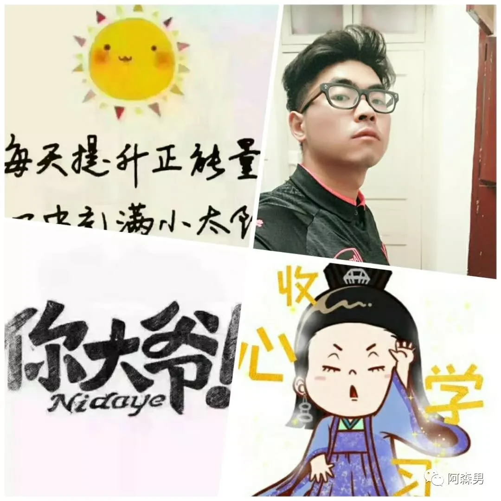
- End -
Words · Arsenan
Photos · Arsenan
Design · Arsenan